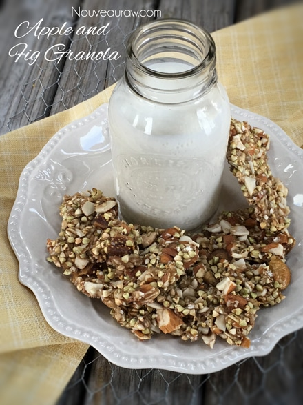
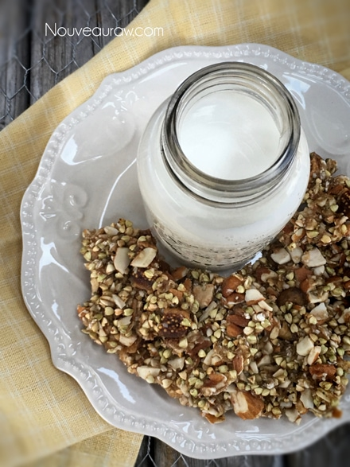

Apple and Fig Granola

~ raw, vegan, gluten-free ~
I never grew up eating figs. Somehow they escaped my grasp, so I am making up for lost time. Now… I did eat Fig Newton cookies and loved those but a real fresh fig or even just plain dried ones… nope, never exposed to them.
I use to peel the outer layer of the Fig Newton cookie off and eat the center. Drifting back in thought, I use to do that to several foods. Hmm. Grapes? I use to peel the skins off. Three Musketeer candy bar? I used to feel the chocolate off and just eat the Musketeer (Nugent part). Haha Funny, I never thought of it like that before. Anyway, I got off track there in thought.
Dried figs are rich in flavor, all of their own. But that is not all that they are rich in… Figs are naturally rich health benefiting phyto-nutrients, anti-oxidants, and vitamins.
They are a concentrated source of minerals and vitamins. Dried figs are an excellent source of minerals like calcium, copper, potassium, manganese, iron, selenium, and zinc. 100 g of dried figs contains 640 mg of potassium, 162 mg of calcium, 2.03 mg of iron, and 232 mg of potassium.
Potassium is an important component of cell and body fluids that helps controlling heart rate and blood pressure. Copper is required in the production of red blood cells. Iron is required for red blood cell formation as well for cellular oxidation. (source)
This granola recipe dries to a very crunchy and snappy treat. It isn’t very sweet, so be sure to taste test the batter before drying it to see if you need to adjust things. I hope you enjoy this recipe! Please leave a comment below.

Ingredients:
Yields roughly 14 cups large clusters
- 2 cups buckwheat groats, soaked
- 2 cups rolled, gluten-free oats, soaked
- 1 cup fresh applesauce
- 1 cup chopped almonds, soaked
- 1 cup maple syrup
- 1 cup diced dried figs
- 2 Tbsp hemp seeds
- 1 tsp ground Ceylon cinnamon
- 1 tsp Apple pie spice
- 1 tsp vanilla extract
- 1 tsp Himalayan pink salt
Preparation:
- After soaking the buckwheat and oats, drain and rinse them under cool water for 2 minutes. Place in a large bowl.
- Add the applesauce, almonds, maple syrup, figs, hemp seeds, cinnamon, Apple pie spice, vanilla, and salt. Mix well with your hands.
- If using soaked almonds, drain and rinse them before adding.
- If you already have soaked and dehydrated almonds on hand, just use those without soaking again.
- Sprinkle the granola mixture on the teflex sheets that come with the dehydrator and dry at 145 degrees (F) for 1 hour, then reduce to 115 degrees (F) for 8-10 hours or until dry.
- Partway through the drying process, transfer the granola to the mesh sheet to speed up the dry time.
- Dry times vary depending on the climate, humidity, model of the machine, and how full it is.
- This dries very crunchy and snappy.
- Once cooled, break and store in airtight containers on the counter for 1-2 weeks. You can also freeze this for 1-2 months.
The Institute of Culinary Ingredients™
- To learn more about maple syrup by clicking (here).
- Why do I specify Ceylon cinnamon? Click (here) to learn why.
- What is Himalayan pink salt and does it really matter? Click (here) to read more about it.
- Are oats gluten-free? Yes, read more about that (here).
- Are oats raw? Yes, they can be found. Click (here) to learn more.
- Do I need to soak and dehydrate oats? Not required but recommended. Click (here) to see why.
Culinary Explanations:
- Why do I start the dehydrator at 145 degrees (F)? Click (here) to learn the reason behind this.
- When working with fresh ingredients, it is important to taste test as you build a recipe. Learn why (here).
- Don’t own a dehydrator? Learn how to use your oven (here). I do however truly believe that it is a worthwhile investment. Click (here) to learn what I use.

© AmieSue.com